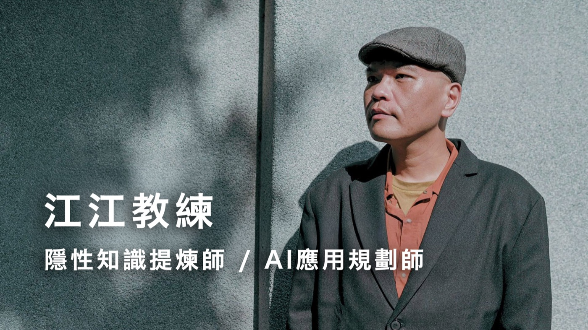
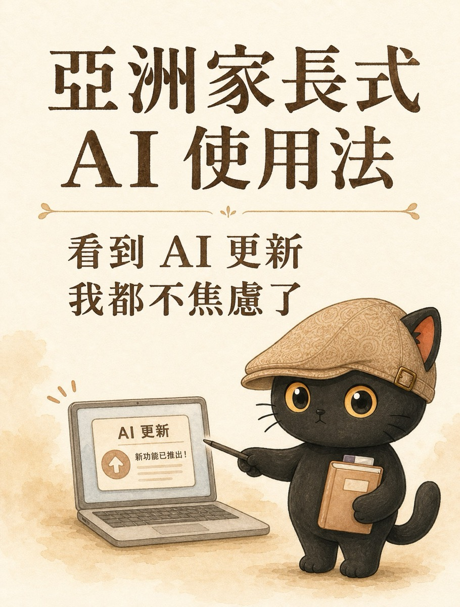
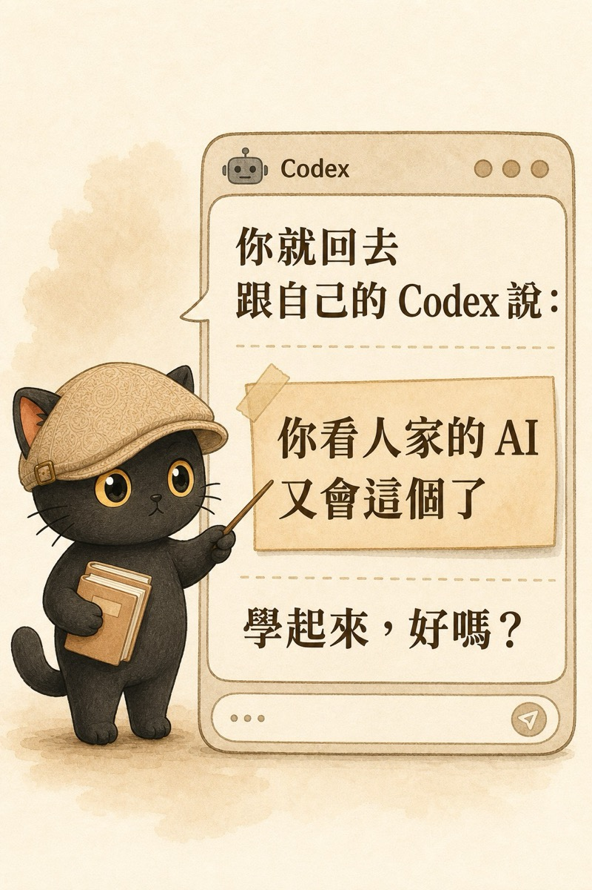

這篇整理自我 6 月 7 日的一場免費線上講座。講座的完整簡報還在線上，這篇是把那晚講的東西重新寫成文章，順序有調整，講座中補充的部分也一併寫進來了。主軸只有一個問題：你要怎麼把一件事，真的交給 AI 去做，而且不用每次重講。
- 會用 ChatGPT，但每次開新對話都要把背景重講一遍的人
- 手上有一堆重複的行政、文書、整理工作，想交出去卻不知道怎麼交的老闆、一人公司、接案者
- 公司已經有一批員工，正在想「要怎麼讓他們用 AI」的主管
- 訓練 AI 員工的四個層次，用來判斷自己現在走到哪裡
- 訓練第一個 AI 員工的四個步驟，以及兩組可以直接複製貼上的提問（駕馭式提問十問、靈魂拷問十問）
- 一句判斷什麼能交給 AI、什麼不能交的標準，還有一套把難度分級、決定什麼時候放手的做法
先說這篇是誰寫的
我是江昱德，大家叫我江江教練。我專門幫用腦袋跟嘴巴吃飯的人，把腦中的經驗變成 AI 能用的知識資產。
三個身分是一層一層聚焦的。iPAS 認證的 AI 應用規劃師是我的證照，但這個範圍太大，到底用在哪？我用在知識架構：帶專業知識工作者，用文字加資料夾分類，就能打造讓 AI 運作的框架。再往下一層，我最擅長的是隱性知識提煉，把你腦中的知識、價值、判斷、思維整理出來，讓 AI 更清楚地知道你。

2022 年，我跟 AI 吵了一架
2022 年底 ChatGPT 剛出來，我為了一個我很在乎的議題，跟它吵了三個小時。
最後我問它：以後別人問你同樣的問題，你不會再答錯了吧。
它說：我沒辦法，我只是個 AI。
那一刻我才懂，這三個小時全白吵了。
我這人好為人師，那次之後發現，原來我也好為 AI 師。所以我決定要教它。你要練的，是學會怎麼教 AI、當它的主管。
還有一件事值得先說清楚。AI 是一個產品，產品要越多人用越好，所以訓練資料越通用越好，這就是通用大語言模型。通用的知識它答得很好，但你獨特的、在地小眾的知識跟經驗，它不會知道，因為 AI 還不會通靈。
所以這套方法不會因為 AI 進步、改版就沒用。除非 AI 學會通靈、學會讀心，否則它只會隨著 AI 工具成長而更好用。
它說不會的時候，也可能只是功能太新、樣本太少，它找不到是正常的。你看新聞掌握最新，直接餵它，它就接上了。你比 AI 更早看到新東西，這就是你的價值。
看到別人的 AI 又會新東西，不用焦慮
我前陣子發過一則貼文，叫「亞洲家長式 AI 使用法」。
看到別人的 AI 又會新東西，你不用焦慮。回去跟你的 AI 說：你看人家的 AI 又會這個了，學起來，好嗎。


順帶把兩組常被混在一起的東西講清楚。
ChatGPT 跟 Codex：ChatGPT 是在網頁上陪你聊天的 AI，Codex 是下載到你電腦裡幫你做事的 AI。
技能包跟提示詞：提示詞就是提示，AI 可能愛聽不聽。技能包有 skill 協議，只要這個 Agent 支援，它會盡量老實地照著做。技能包更有強制性、內容更豐富、流程細節更多，多到可以幾千字甚至幾萬字。
- 網頁版聊天型 AI 和桌面型幹活 AI：Codex 是裝進電腦裡的 GPT 桌面版 這段只講了差在哪，那篇講的是為什麼桌面型可以直接接進你的工作流程，聊天框不行
- Claude Skills 是什麼？把你的專業流程，變成 AI 能重複執行的知識資產 技能包這個詞的完整版，包含為什麼一次對話裡教會的東西留不下來
鋼釘可以把木屋釘得更牢，但那還是木屋
這個觀念我是從 Notion CEO Ivan Zhao 的〈蒸汽、鋼鐵與無限智能〉來的。
鋼釘可以把木屋釘得更牢，讓它更穩。但你再怎麼補，它還是在木屋的邏輯裡。摩天大樓不是靠把木屋釘得更牢出現的，它是因為有人改用鋼骨，重新設計了建築怎麼承重。
早期工廠也一樣。把水車換成蒸汽機、其他不動，生產力只小升。真正爆發是脫離河流、圍繞蒸汽機重新蓋一座工廠。我們現在用 AI，大多還停在換水車這一步。
Notion 現在一千名員工之外，已經有七百多個 AI 代理在做會議記錄、客戶回饋、週報這些重複工作。那才是重新蓋的工廠。
補一句給覺得自己不是工程師的人。過去的軟體是預錄好的程式，1 加 1 永遠等於 2，按一萬次都一樣。AI 是隨機生成的大語言模型，本質不同。所以會不會寫程式，跟會不會用 AI 沒有正相關。這個時代是所有人重新學用 AI，機會是平等的。
- AI 原生不是數位轉型 這一段講的是為什麼補強舊流程不夠，那篇談的是如果一開始就照 AI 的邏輯設計，工作長相會差在哪裡
訓練 AI 員工的四個層次
這是我這幾年走過來的路，也是我現在用來判斷自己走到哪裡的架構。
2024 年我就很會訓練自己的 AI 助理。
2025 年開始，我帶工作夥伴各自訓練他們的。
Claude 的 skill 出現，我花了一兩個月突然發現：知識是會累積的。訓練好一個助理，可以再叫這個助理去訓練新的助理。
卡在技術，兩台筆電還沒辦法直接連通。預計七、八月，最慢九月完成。
第四層做到之後會是這樣：來上工作坊的人各自帶電腦，我的 AI 教他們的 AI 做事，我跟他們聊概念，就像老闆聚會聊合作，事情員工去幹。
前面三層我都做到了。第四層的目標是七月底前至少十個案例。
我開始把 AI 當員工，不是當工具
2025 年我改變了用法。
先講一個我在婚禮攝影學到的招。有個攝影大神請第二個人拍主畫面，自己專拍不經意的瞬間。我把這招用在會議記錄：AI 記它會記的，我只記 AI 記不住的。
還有一個判斷重點的例子。如果我要評估這個主題講得順不順、有沒有越講越順，那我吃螺絲的那些地方，才是重點。逐字稿上看起來是雜訊，對我的目的來說是訊號。
這就是為什麼工具會換，知識庫會留下來。
我現在日常用三套 AI 分工：Codex 記它自己覺得重要的，愛馬仕在背景每半小時客觀記錄我所有的操作步驟，最後讓 Claude 去分析「AI 抓的重點、我認為的重點、客觀的事實」三者怎麼修正跟平衡。我把它們當三個人：一個認真記錄的小秘書，一個自由發揮，一個統整分析。因為你怎麼知道 AI 記的重點真的是重點？所以我才要這樣交叉。
- 文件就是系統：非工程師怎麼設計 Agent 框架 這段講的是我的系統長什麼樣，那篇講的是你要怎麼從零把一個角色設計成會自己判斷的 AI，不用寫程式
訓練第一個員工：帶它，像帶一個新人
先挑一件你每天都做、做到很煩、規則最清楚的事。別貪心，一次一件。
做一次，邊做邊講你為什麼這樣做。
叫它把過程寫成工作手冊，這就是技能包。
下次把手冊丟給它，它做、你檢查，不對就改手冊。
每次它做錯，把規則補回手冊，它會越來越懂你。
把現在的 AI 想成一個名校剛畢業的學霸：非常聰明、考試一百分，但完全沒有業界實戰經驗，而且第一天到你公司，不知道你有什麼產品、服務、規則。所以你要做的，是把做事的細節告訴它。
最省力的入口是用講的。帶真人新人的時候，順便把 AI 一起教，把帶人、開會、跟夥伴溝通的過程錄音存下來，叫 AI 去學、去整理。人走了 AI 也學會了，下一個新人進來，直接叫 AI 學長去帶他。
錄音之後怎麼變知識庫
這裡分老闆心態跟員工心態。自己埋頭去弄逐字稿、研究工具，那是員工心態。
老闆心態是把這件事丟給 AI，你可以直接照抄這段話：
實際怎麼操作、用什麼工具，那是 AI 該煩惱的事。
- 把知識當員工：AI 時代知識管理的分水嶺 舊做法是整理好之後人去用它，那篇談的是整理好之後讓知識自己去工作，也就是你這份手冊後來會住在哪裡
心法一：對人不敢開口的，乘十倍提給 AI
對真人員工不敢開口的要求，對 AI 直接乘十倍開下去。AI 不會離職、不會抱怨、不會找勞工局。
| 對員工你會說 | 對 AI 你應該說 |
|---|---|
| 想三個方向就好 | 想 30 個，再給我 5 個會失敗的 |
| 找一些參考 | 用當地語言找當地資料，日文找日文、英文找英文，各找 50 篇 |
| 下週給我 | 現在給我，做不到告訴我為什麼 |
| 你判斷一下 | 給我五個版本，每個都附上推薦理由跟風險 |
| 不錯，再修一下 | 我這份 60 分，照我的目標給我一個 100 分的，並告訴我差在哪、你該怎麼學 |
這個心法有兩個版本。如果你是老闆，平常想要求員工但不好意思直接說的，對 AI 直接加強十倍說下去。如果你平常是員工，覺得受了委屈無處安放，就把老闆主管給你的壓力乘十倍，丟給你的 AI 助理。AI 員工不會累、24 小時耐操，訂閱費都付了，對它客氣是在浪費錢。
找資料也一樣。我英文很差只會中文，以前用中文搜國外，其實還是繞回同一個同溫層。真正該做的是用日文找日文、用英文找英文、用韓文找韓文，直接站到各國的語境裡找。這件事 AI 做得到，所以要去想各種更極端的用法。
駕馭式提問十問
這十句拿去直接用，任何一次 AI 給你答案之後都可以問。
- 真的嗎？
- 資料來源是什麼？
- 解釋這三個重點給我聽
- 如果失敗，五個原因是什麼？
- 競爭對手會怎麼想？
- 上週、上個月的看法，有什麼要改進？
- 你漏了什麼？
- 有沒有完全相反的角度？
- 你自己最不確定的地方在哪？
- 再給我五個你還沒想到的版本
這裡有個更根本的心態差別。很多人下提示詞時，心裡還是把 AI 當工具，所以會努力研究這個工具每個按鈕怎麼操作。我的用法反過來：工具是給員工用的，我要訓練的是 AI 這個員工，叫它自己去學工具、用工具、交結果。
用攝影師來理解。我請攝影師拍照，不需要自己研究相機怎麼操作；我要講清楚的是「我要拍什麼」「我要什麼感覺」「結果要長怎樣」。相機怎麼調，是攝影師要處理的事。
- 給老闆的駕馭思維：把不敢對員工說的，講給 AI 聽 這一段是講座上的濃縮版，那篇把老闆版與員工版的差別、以及怎麼在日常對話裡練這個姿態，講得更細
心法二：讓 AI 反過來拷問你
上面那組是你拷問 AI。這一組反過來，讓 AI 拷問你。用的是費曼學習法的邏輯：講得出來，才代表真的懂。
靈魂拷問十問
- 用一句話講，這到底在解決什麼問題？
- 講給完全外行的人聽，你會怎麼說？
- 你最站不住腳的假設是哪一個？
- 只能留一個重點，是哪個？為什麼？
- 你怎麼知道這是真的，不是你以為的？
- 反對你的人會怎麼說？
- 這跟你上次的想法差在哪？為什麼改了？
- 哪個地方你其實還沒想清楚？
- 拿掉行話，你還講得清楚嗎？
- 如果這是錯的，你會從哪裡先發現？
什麼時候你教 AI，什麼時候 AI 教你
AI 可以先想成全人類資料訓練出來的平均值。當你知道自己某個能力高於平均值，就要訓練 AI、把它當員工；當你知道自己在某個領域低於平均值，就讓 AI 當顧問、當教練，反過來訓練你。
把你的判斷、標準、流程寫給 AI，讓它學你。這是訓練員工。
讓 AI 拷問你的假設、盲點、反方觀點，幫你補決策力。這是請顧問。
問問題不難，難的是判斷自己到底在人類水準之上，還是在人類水準之下。判斷對了，AI 才會站在正確的位置：不是每件事都叫它照做，也不是每件事都聽它的。
真人員工通常不敢一直挑戰老闆，顧問也不可能無時無刻在場。AI 很適合承擔這種隨時可用的顧問角色。
- 當每個人都有 AI，真正拉開差距的是判斷力 這段講的是怎麼用 AI 磨自己的判斷，那篇處理的是更前面一個問題：當同事跟你用同一套工具，你的差異到底剩下什麼
為什麼能放大 100 倍
AI 放大你兩層能力。
AI 當你的顧問跟教練，幫你想目標、策略、風險、反方與盲點，磨利你的判斷。
把操作步驟、SOP、資料整理、回填、轉檔、查資料這些事，交給 AI 自己學、自己跑、自己檢查。
兩層相乘，把自己放大 100 倍，是合理的。
×100 聽起來誇張，但每個時代的新工具本來就會帶來這種增幅。沒有麥克風時，一張嘴只能讓十幾個人聽見；有麥克風後，幾百人、幾千人都能聽見；再加上手機與 YouTube，內容可以被更多人反覆看到。
活案例：一個工具，怎麼長成一條工作流
我在講座上示範了一個當天剛看到的新工具，微軟開源的語音轉文字模型 VibeVoice。它一次能處理一小時連續音頻，還能結構化，包含誰說的、什麼時候說的、說了什麼，支援五十種語言。
我平常最簡單的做法是丟 NotebookLM，快又準，但它有兩個缺點：無法辨時間、無法區分講者。教學影片、YouTube 演講可以，但會議記錄不行，因為誰講的、他是秒答還是遲疑三十秒才答應，差很多。
- 先問它能不能做。我沒急著叫它做，先問「你能安裝嗎」。先盤點它的能力，確認可行才往下。
- 講需求。一般人 16G 的筆電要能跑，而且一定要能處理多角色。它說方向對、可以做。
- 延展成流程。把它接進我原本的會議記錄流程：分離講者、存原始逐字稿、清理逐字稿分等級（預設、很詳細、超詳細），再請 Claude 做分析，重點待辦脈絡加上風險隱憂。
- 適配多情境。同一份逐字稿，可能是會議記錄、教學影片、YouTube 演講，整理方式不能只有一種。
- 做成可複製的能力。我把「從一個工具延展成一條工作流」這件事本身也做成技能包，讓夥伴、學員都能用。
結果我一次做出了兩個員工：一個是幫我整理逐字稿的員工，一個是幫我把「怎麼做出員工」這個流程做出來的員工。
同一套訓練法，用在查資料上
我先問 AI「你自己可以切換模型嗎」，確認後才定分工：爬資料用便宜的 mini，只找來源摘錄；統整判斷才用大模型。然後跟它說「以後說『開代理查資料』就是這招」，最後叫它把規則寫進技能包，靠文件記住，不靠這次對話。
現在我一句「開代理查資料」，它就會自己跑這套：
- 我的會議記錄 Agent 工作流 這段講的是工具怎麼接進流程，那篇是接進去之後的完整成品：錄音進來，待辦、風險、決策脈絡怎麼一路長出來
最核心的一件事：能力與邊界
搞懂什麼能交、什麼不能交，是這場講座裡我認為最重要的一段。
難度也要分級。這件事難度 60 分，AI 現在做到 50 分先別交；到 60 分我看一下；到 80 分我放手，再叫另一家 AI 檢查就好。
還有兩個心法要一起用
意圖優先，步驟其次。2024 年你寫 100 分的步驟給 60 分的 AI，很棒。2026 年 AI 可能自己知道 300 分、500 分的做法，你用步驟框住它反而虧。現在的做法是：給目標，給一個建議，說「你想想有沒有更好的，甚至上網查」。你要會畫大餅，方向說清楚，讓 AI 自己想辦法。
讓 AI 猜意圖有個前提：它得先知道你是誰。我已經先餵它資料、存了工作日誌在裡面，所以下指令前我會問它「你執行之前，知道我為什麼這麼做嗎？說說看」。它做完如果只有六十分，我會說「我有一個一百分的版本，但你先告訴我，為什麼你六十、我一百，差在哪、為什麼差、你有辦法學嗎、怎麼學、怎麼確保下次也做到一百分」。
知人善用，選對 AI 做對事。不同家 AI 有不同個性，Claude、GPT、Gemini 各有調性，同一家不同模型也不一樣。就像拍片：拍高質感的去拍形象片，拍有趣的去拍短影音，不錯置。老闆要知道誰能做什麼，不是自己去研究攝影機怎麼操作。
- 有標準答案的交給程式，沒標準答案的才輪到 AI 「什麼能交、什麼不能交」的完整版，包含公司要導入時該從哪一類工作開始挑
- 別再寫死指令：把你要什麼講清楚，剩下交給 AI 意圖優先的完整版，講為什麼指令寫越長、AI 反而表現越受限
從一個員工，到一條生產線
講一個我現在真的在跑的員工。
我的 AI 小編：我出觀點、判斷發不發，春總編寫文案，AI 小編負責回收已發貼文、回填發文看板、補連結、整理日報週報。我用 Codex 排了每天晚上回收、每週週報的自動任務。
先別急著做第二個。第一個做完，先把過程提煉成一份「怎麼訓練一個 AI 員工」的方法，再叫 AI 照同一套幫你做第二個、第三個，你就是在做一條生產線。Codex 的外掛技能裡自己就內建了做技能包的工具，你只要跟它說「我覺得剛剛這個操作很棒，希望你學會幫我做技能包」，它就會了。
如果你是老闆，這裡有個常被忽略的判斷
公司已經有一批員工，你希望他們用 AI。很多時候，訓練員工用 AI，不如直接訓練 AI 員工。
而且不是每個人都適合用 AI。每個人都會用一點，但有些人的思維、有些公司的商業模式，特別容易被 AI 放大。如果你的房子才剛要蓋，像我現在這樣，我不會再蓋木頭的，直接用鋼骨：先想哪些價值最容易被 AI 放大、最容易被 AI 傳遞，就做那一塊。
舉個例子。公司要拍形象影片，想找自己真正的員工出鏡。一百個員工，與其每個人都化妝、每個人拍一張，不如挑一個最上相的，把他化得更好，請攝影師狂拍他。有些人面對鏡頭就僵、就扭捏。與其花時間訓練每個人美姿美儀、幫每個人治裝，不如讓上相的人去上相就好。
用 AI 也一樣：不是每個人、每件事都適合被放大，挑最適合的，集中火力。
- 訓練你的 AI Agent 小編：讓 AI 認識你，比學會用 AI 更重要 這一段講的是生產線的概念，那篇是同一個 AI 小編的完整訓練實錄，包含它一開始做錯什麼、規則怎麼一條一條補回去
讀完之後的第一個動作
打開 Codex，把這篇文章丟給它，跟它說：
再挑一件你每天都做、做到很煩、規則最清楚的事，從那件開始。一次一件，別貪心。
如果你不確定要從哪一件開始，把下面這段一起貼給它，讓它先幫你挑：
工具要不要付費？可以從免費的開始。Codex 用 ChatGPT 免費帳號就能先試，先把方法跑起來、把一件事訓練好。等你確定每天都要用、量也變大了，再升級付費版。先別卡在要不要付錢，先卡在「我有沒有真的把一件事訓練起來」。
最後回到我覺得最關鍵的能力：其實最重要的不是技術，是判斷力，判斷一個東西值不值得信任、有沒有價值。你信任我、覺得我講的有價值、你想做，叫 AI 去做就好。
常見問題
用三層想。第一層知識庫（像 CLAUDE.md）放「我是誰、我的判斷標準、我要什麼」，讓 AI 懂你。第二層技能包放「這件事的做法步驟」，讓 AI 照你的方法做。第三層程式碼是 AI 自己會處理的執行細節，你不用碰。你只顧前兩層，那兩層裝的全是你的知識。
把你腦中的判斷，變成它讀得懂的材料。最省力的入口是用講的：把你做一件事的過程錄音，叫 AI 整理成一份工作手冊，它下次照著做。你做給它看一次，它寫成手冊，它做你檢查，做錯就把規則補回手冊。這份手冊就是你的知識資產，工具會換，它會留下來。
可以，那是生產線的進階。但先別急著串全部。先把一個 AI 員工訓練到好用，再把第二件事交給它，最後才把多個工具、多個員工串成自動流程。先有一個會動的，再談一整條線。
- 怎麼訓練自己的 AI 員工（線上簡報）↗ 十八段的完整版，含講座當下的補充。這份簡報同時是給人看的簡報，也是給 AI 用的材料，你可以直接丟給你的 AI，跟它說「參考這個老師的東西，請你自己變成一個好員工」